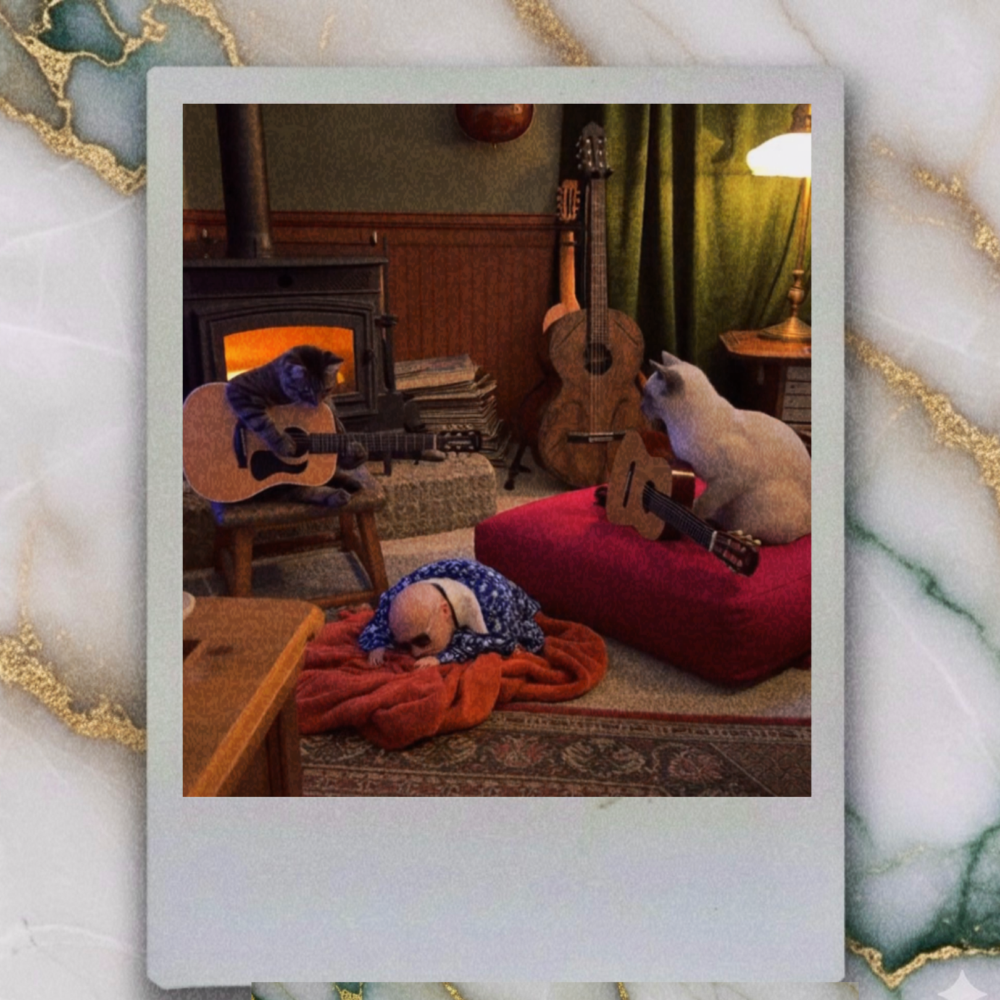
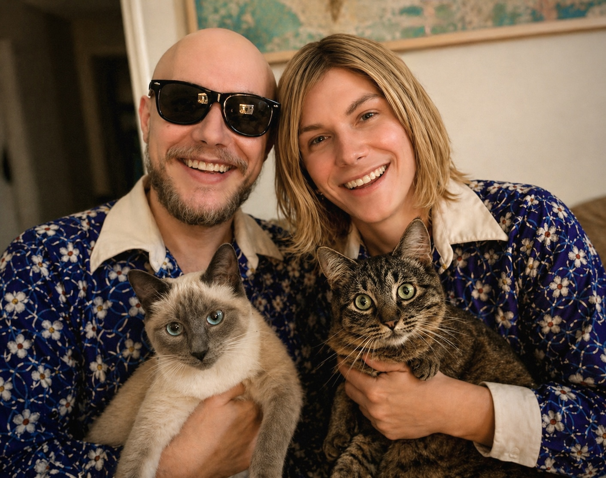

Supervision is continuous.
Temporary evidence from the existing archive. Actual photographs, allegations, and kitty dispatches will accumulate here.
Authority undisputedSupervisory records / access inexplicably granted
Their involvement is extensive, their methods are unclear, and their contribution to the recordings remains the subject of several arguments.

Temporary evidence from the existing archive. Actual photographs, allegations, and kitty dispatches will accumulate here.
Authority undisputed
Accuracy is encouraged but cannot be enforced. Further incidents may be added whenever they are genuinely funny.
File partially eatenThis is a crooked scrapbook, not a scheduled feed. It can stay unfinished for as long as the kitties require.